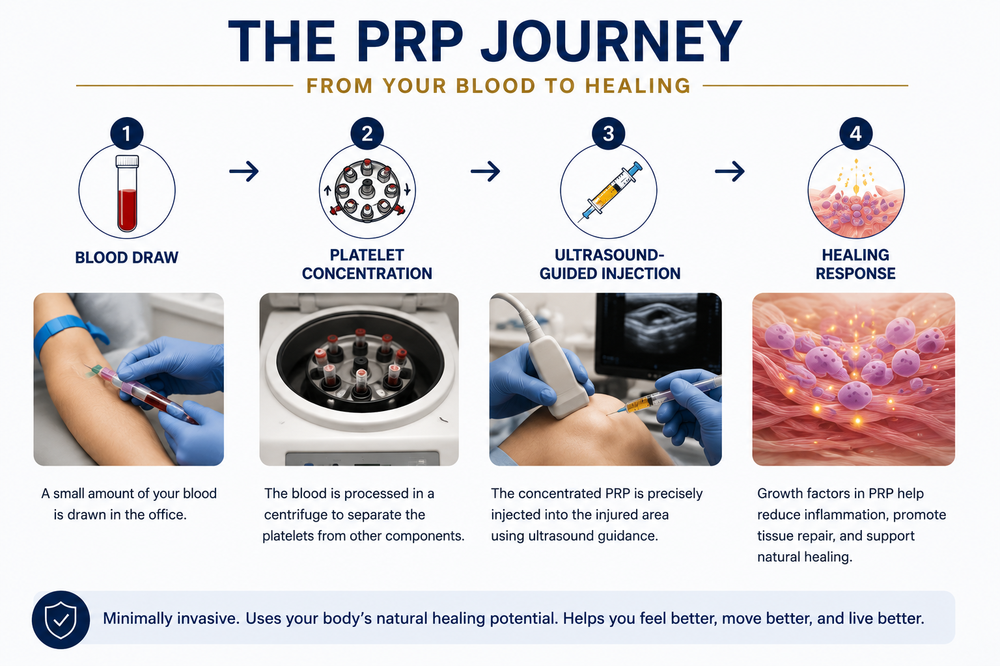

What patients should understand first.
The goal is to match the right treatment to the right diagnosis. Orthobiologics may help some patients, but expectations should be realistic and evidence-based.
Not “magic” and not a cure-all
PRP and BMAC are tools. They may help pain, inflammation, tendon symptoms, or mild to moderate arthritis in selected cases, but they do not reliably regrow a normal joint or reverse advanced arthritis.
Your diagnosis matters
A treatment that may be reasonable for knee arthritis or a tendon problem may not be appropriate for severe bone-on-bone arthritis, major deformity, instability, or a full-thickness tear that needs repair.
Insurance often does not pay
Most insurance plans consider PRP and BMAC investigational or non-covered for many orthopedic uses. Patients should expect that these treatments may be self-pay.
Advanced Orthobiologics Training
Orthobiologic injections should be offered with careful diagnosis, image-guided precision when appropriate, and realistic expectations. Dr. Barnes has pursued dedicated post-graduate orthobiologics training through the Interventional Orthobiologics Foundation, including general orthobiologics education and intermediate hip, knee, shoulder, and elbow injection training.
Hip & Knee Orthobiologics
Focused training in orthobiologic injection strategies for hip and knee conditions, including arthritis and soft-tissue problems.
Shoulder & Elbow Orthobiologics
Focused training in biologic injection options for shoulder and elbow conditions, including tendon-related pain and overuse injuries.
Evidence-Based Counseling
A conservative, orthopedic-surgeon-led approach: biologics are discussed as one part of a complete plan, not as a guaranteed cure or replacement for every surgery.
Patient Education Graphics
These visuals explain where PRP may fit, what the process looks like, who may be a reasonable candidate, and how PRP compares with cortisone and BMAC.




Platelet-Rich Plasma (PRP)
PRP is made from a sample of your own blood. The blood is processed in a centrifuge to concentrate platelets and growth factors, then injected into the targeted joint, tendon, or soft tissue area when appropriate.
- Typically performed as an outpatient procedure.
- Commonly considered for selected tendon problems and mild to moderate arthritis.
- Different PRP systems can produce different products, including leukocyte-rich or leukocyte-poor PRP.
- Usually requires a discussion about avoiding anti-inflammatory medications around treatment.
Bone Marrow Aspirate Concentrate (BMAC)
BMAC is made by taking bone marrow, usually from the pelvis, and concentrating it. It contains platelets, signaling proteins, and marrow-derived cells that may influence inflammation and tissue healing.
- More involved than PRP because bone marrow must be aspirated.
- May be discussed for selected arthritis, cartilage, tendon, or biologic augmentation situations.
- Best considered after diagnosis, imaging review, and careful expectation-setting.
- It should not be marketed as a guaranteed “stem cell cure.”
Where orthobiologics may fit.
These treatments are most useful when they are part of a broader plan: diagnosis, activity modification, rehabilitation, imaging-guided injection when appropriate, and a clear backup plan if symptoms persist.
| Condition | Potential role | Important limitation |
|---|---|---|
| Knee arthritis | PRP may be considered for symptom relief in selected patients with mild to moderate arthritis. BMAC may be discussed in selected cases. | Advanced bone-on-bone arthritis may be better treated with joint replacement when symptoms and function justify surgery. |
| Tendon problems | PRP may be considered for chronic tendon pain, tendinopathy, or partial-thickness soft tissue problems depending on location and imaging. | Complete tears, major retraction, weakness, or failed conservative care may require surgery. |
| Rotator cuff and shoulder conditions | Biologic augmentation may be discussed in select tendon-healing situations or nonoperative tendinopathy care. | Evidence is still evolving, and PRP/BMAC should not be presented as a guaranteed way to avoid repair or prevent re-tear. |
| Hip pain and arthritis | Injections may help clarify the pain generator and may be considered for selected mild to moderate arthritis or soft tissue problems. | Severe arthritis, deformity, or major functional limitation may require discussion of hip replacement. |
What the visit looks like.
Before recommending PRP or BMAC, Dr. Barnes will usually review the history, physical exam, X-rays or MRI when available, prior treatments, activity goals, and whether the problem is more likely to respond to biologic treatment, therapy, medication, injection, or surgery.
Diagnosis
Clarify the source of pain with exam and imaging.
Options
Discuss therapy, injections, biologics, and surgery.
Procedure
Use careful technique and image guidance when appropriate.
Recovery
Set expectations for soreness, activity changes, and follow-up.
Coverage and cost expectations
Most insurance plans do not routinely cover PRP or BMAC for many orthopedic conditions. Coverage rules vary by plan and can change, but patients should expect that orthobiologic treatments may be self-pay. The office can help clarify practical scheduling and payment expectations before treatment.
Because cost matters, Dr. Barnes' goal is to be direct about whether a biologic treatment is reasonable, whether the evidence supports trying it, and whether a more standard treatment is likely to be a better value.
Orthobiologics FAQ
Common questions patients ask about PRP, BMAC, expectations, and safety.
What is PRP?
PRP stands for platelet-rich plasma. A small sample of blood is drawn and processed to concentrate platelets and growth factors. The PRP is then injected into a targeted area such as a joint, tendon, or soft tissue structure when appropriate.
What is BMAC?
BMAC stands for bone marrow aspirate concentrate. Bone marrow is usually taken from the pelvis and processed to concentrate marrow-derived cells, platelets, and signaling proteins. It is more involved than PRP and should be used selectively.
Is this the same as stem cell therapy?
Not exactly. BMAC contains a very small number of marrow-derived cells along with many other biologic factors. It should not be described as a guaranteed stem cell cure or as a treatment that regrows a normal joint.
What conditions might PRP help?
PRP may be discussed for selected tendon problems, soft tissue injuries, and mild to moderate arthritis. The best use depends on the diagnosis, severity, imaging findings, and prior treatments.
What conditions might BMAC help?
BMAC may be discussed for selected arthritis, cartilage, tendon, or biologic augmentation situations, but the evidence is still evolving. It is usually not the first step for every patient.
Will PRP or BMAC help me avoid surgery?
Sometimes these treatments may delay or reduce the need for surgery, but not always. If there is advanced arthritis, severe deformity, instability, or a major tendon tear, surgery may still be the most predictable option.
Does insurance cover PRP or BMAC?
Often no. Many insurance plans consider PRP and BMAC investigational or non-covered for orthopedic uses. Patients should expect that these treatments may be self-pay unless their plan states otherwise.
Are PRP and BMAC safe?
Because PRP and BMAC are made from your own blood or marrow, allergic reaction risk is generally low. However, any injection or aspiration can cause soreness, bleeding, infection, nerve irritation, flare reaction, or failure to improve symptoms.
How long does it take to work?
Improvement, when it occurs, is usually gradual. Some patients notice changes over weeks, while others may take several months. Some patients do not improve enough to consider the treatment successful.
Can I get a steroid injection instead?
Sometimes. Steroid injections can reduce inflammation quickly, but they are not the same as PRP or BMAC. The best choice depends on the condition, timing, tissue quality, arthritis severity, and your goals.
Do I need imaging guidance?
For many injections, ultrasound or fluoroscopic guidance can improve accuracy. Dr. Barnes will discuss whether image guidance is appropriate for your specific condition.
What should I bring to the appointment?
Bring X-rays, MRI reports, prior injection records, therapy notes, surgery records, and a list of medications and supplements. This helps determine whether PRP, BMAC, standard injection therapy, therapy, or surgery is most appropriate.
Considering PRP or BMAC?
Schedule an orthopedic evaluation to clarify your diagnosis and decide whether orthobiologics make sense for your goals.